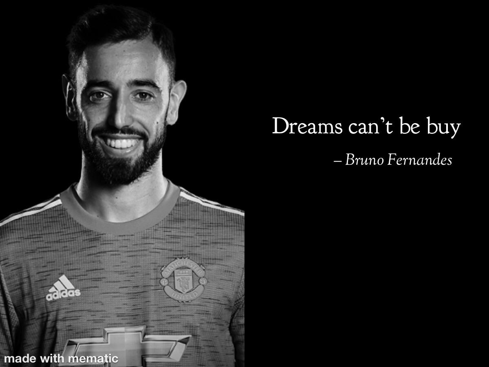

Hello! My name is Adam Fahim, better known as Adam (or Peanuts, Adoms, and so much more). I am a student in Universiti Teknologi MARA (UiTM) Melaka Campus Jasin.
As a Computer Science student, it's been more than a honour to be studying in a course that I have adored in a long, long time, dating back to 2009! Obstacles definitely got in the way in realising my dreams, but no one was able to put it at a halt. As Bruno Fernandes (Manchester United player) once said, with a rather broken English:
Furthermore, it was always been a me thing where I would just push my boundaries, at times too much... Definitely not thinking of a motorcycle crash.
Well, Kota Damansara, PJ is what I would call home. My favorite part about Kota Damansara is that the community always have each others back, which is quite a rare occurence for an urban area, which, by the way, is one of the most rapidly developing cities in Malaysia! Not just that, the neigbouring areas are plenty fun too.
Since quarantine, Melaka has been a long lost friend to me. When I started studying in Jasin, I ever so slightly start to enjoy living there - it is surprisingly so much fun, especially with my accompanying friends. Unfortunately, since COVID-19 hit, things, it never felt the same anymore. Here's a message to you Melaka: I miss you.
I am interested in profressionally sleeping..................... not. Of course not. No no no. But truthfully, I am looking forward into furthering my studies in the same field and hopefully I can find a work that fits my passion, because when it is one it feels like a fun activity rather than a chore. Oh, most preferably somewhere in the EU.
Oooh, there's plenty of them, and this ^ is definitely one. I just love sim racing so much that I made a dedicated Sim Racing page explaining my love for the hobby.
Tough question. But if I had to choose one and only one, I would choose two, which is my OG "adomS" playlist and this one that I collaborate with my friends. Fret not, all of them are good, enjoyable music. If it is not, it would have not been on the playlist(s).